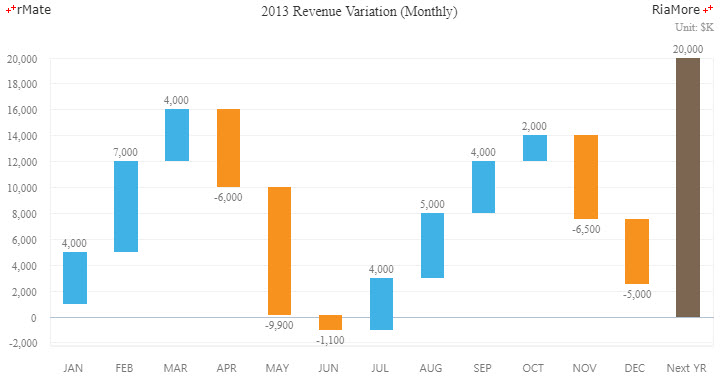
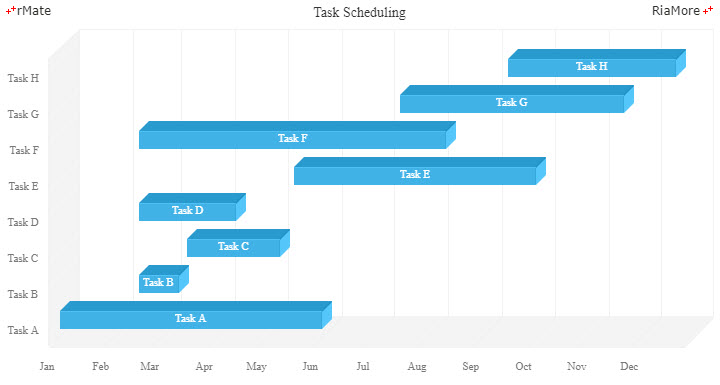
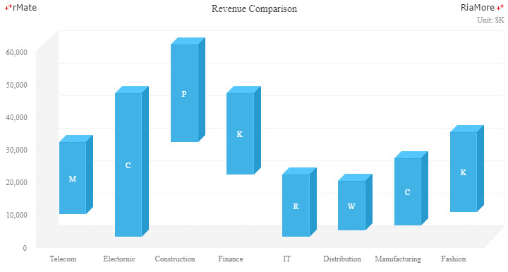
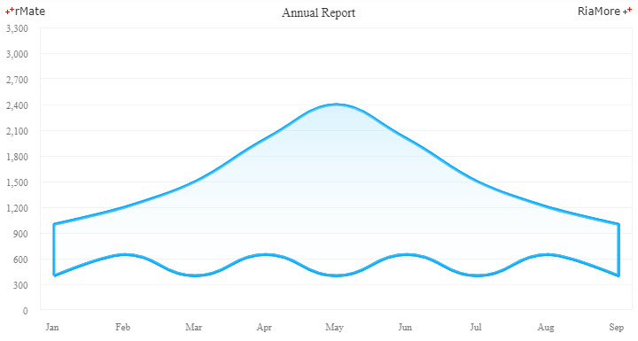

From-To 차트
From-To 차트는 시작 데이터(From)와 끝 데이터(To) 두 가지 변수값을 표현하는 차트로써, 두 가지 변수값에 대한 범위, 차이, 분포 등을 표현하는데 유용하게 활용되는 차트의 유형입니다.
From-To 차트에 적용가능한 데이터 시리즈는 컬럼 시리즈(Column2DSeries, Column3DSeries),
바 시리즈 (Bar2DSeries, Bar3DSeries)
그리고 영역 시리즈 (Area2DSeries)입니다.
From-To 차트에서는 해당 데이터 시리즈에서 지원하는 속성들을 모두 사용할 수 있으며, 추가적으로 minField 속성을 이용하여 시작 데이터(From)를 설정합니다.
워터폴 차트
컬럼 시리즈를 From-To 차트에 적용하여 워터폴(Waterfall) 차트를 생성할 수 있습니다.
다음은 컬럼 시리즈를 이용하여 워터폴(Waterfall) 차트를 생성하는 코드와 이를 적용해서 출력한 차트의 예제입니다.
이 예제에서는 데이터 객체의 from 필드를 minField 속성(minField = “from”)에 to 필드를 yField 속성(yField = “to”)에 지정하였습니다.
<Column2DChart showDataTips="true" dataTipJsFunction="dataTipFunc">
...
<series>
<Column2DSeries id="series1" minField="from" yField="to" labelPosition="outside" insideLabelJsFunction="labelFunc" fillJsFunction="fillFunc">
...
</Column2DSeries>
</series>
...
</Column2DChart>

See the CodePen 알메이트 차트 - 워터폴 차트
From-To 바 차트
다음은 3D 바 시리즈(<Bar3DSeries>)를 이용하여 From-To 바 차트를 생성하는 코드와 이를 적용해서 출력한 차트의 예제입니다.
이 예제는 업무 태스크를 계획하는 용도로 From-To 차트를 활용할 수 있음을 보여줍니다.
<Bar3DChart showDataTips="true">
...
<series>
<Bar3DSeries id="series1" minField="date1" xField="date2" labelPosition="inside" insideLabelField="cat" color="#ffffff" insideLabelYOffset="-2">
...
</Bar3DSeries>
</series>
...
</Bar3DChart>

See the CodePen 알메이트 차트 - From-To 바 차트
From-To 컬럼 차트
다음은 3D 컬럼 시리즈(<Column3DSeries>)를 이용하여 From-To 컬럼 차트를 생성하는 코드와 이를 적용해서 출력한 차트의 예제입니다.
이 예제는 각 비지니스 영역별로 매출의 변화를 보여주기 위한 용도로 From-To 차트를 활용할 수 있음을 보여줍니다.
<Column3DChart showDataTips="true" dataTipJsFunction="dataTipFunc" columnWidthRatio="0.5">
...
<series>
<Column3DSeries id="series1" minField="min" yField="max" labelPosition="inside" insideLabelJsFunction="labelFunc" color="#ffffff">
...
</Column3DSeries>
</series>
</Column3DChart>

See the CodePen 알메이트 차트 - From-To 컬럼 차트
From-To 영역 차트
다음은 영역 시리즈(<Area2DSeries>)를 이용하여 From-To 영역 차트를 생성하는 코드와 이를 적용해서 출력한 차트의 예제입니다.
이 예제는 특정 기간에 대한 값들의 범위를 보여주기 위한 용도로 From-To 차트를 활용할 수 있음을 보여줍니다.
<Area2DChart showDataTips="true">
...
<series>
<Area2DSeries minField="Cost" yField="Profit" form="curve" displayName="Profit">
<areaFill>
<SolidColor color="#b7e7fc" alpha="0.5"/>
</areaFill>
<areaStroke>
<Stroke color="#0daaf7" weight="3"/>
</areaStroke>
...
</Area2DSeries>
</series>
</Area2DChart>

See the CodePen 알메이트 차트 - From-To 영역 차트